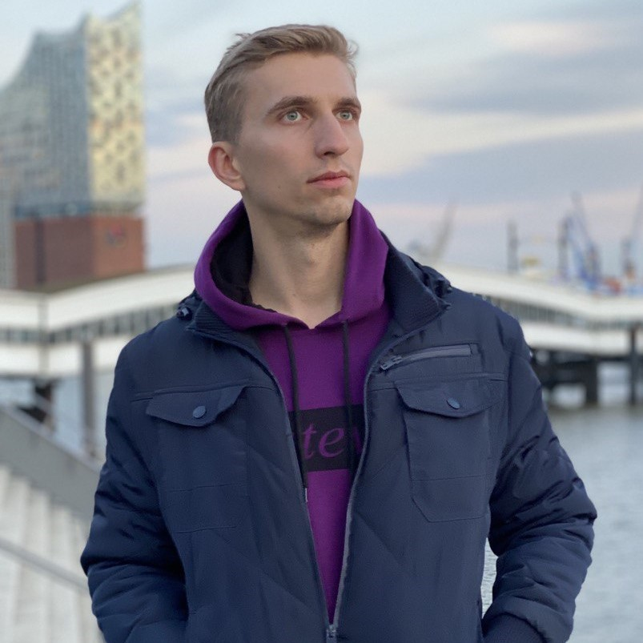

Dmytro Babenko
Staff Software Engineer
Master's Degree in Computer Science at National Technical University of Ukraine.
Languages - English, Ukrainian.
Last Read - Drive by Daniel H. Pink (Author).
📧 dima.babenko1995@gmail.com
👉 WA/Telegram +38(093)855-31-06
Profile
Software Engineer with international experience working remotely across Europe and Southeast Asia since 2021.
Comfortable operating in distributed teams and adapting to diverse environments.
Open to both relocation and remote opportunities.
Focused on building scalable, reliable systems and propagating strong engineering culture through
knowledge sharing, clear communication and ownership.
Interested in scalable and modern decentralized architectures.
Experience
🚧 Staff Software Engineer | Aristocrat Interactive
2024 - Present
⚒️ Key achievements and responsibilities
-
I have been a tech leader for 2 independent teams simultaneously.
Focusing on the quality of deliverables, tech initiatives, growth of engineers.
-
Worked with Team Leads while ensuring teams have no blockers, engineers are moving into the right directions.
-
Covered investigations required for the clear grooming of the features by teams.
Actively using metric tools for providing production data insights.
-
Owned end-to-end technical system design, implementation and in-depth code reviews.
-
Optimized heavily loaded APIs, reducing request processing time by 50% and improving system throughput (not a fake).
-
Set on rails a huge project - building a next generation of transactions ledger agnostic for all the B2B customers,
focusing on decomposition and flexibility.
-
Conducted a plenty of technical interviews. Mentored engineers, focusing on technical excellence, cultural fit
and fostering long-term growth and collaboration.
🚧 Team Lead | Aristocrat Interactive
2023 - 2024
⚒️ Key achievements and responsibilities
-
Simultaneously was a Scrum Master and a Software Engineer for a team of 7 members.
-
Run scrum activities, plannings one-to-ones and team members personal growth.
-
Affectively balanced tasks prioritization cooperating with product/project managers.
-
Ensured technical solutions aligned with business objectives.
-
Provided go-live plans, data migrations to production.
🚧 Sr. Software Engineer | Aristocrat Interactive
2021 - 2023
⚒️ Key achievements and responsibilities
-
Delivered complex features across the full development lifecycle, from architectural design and implementation
to code reviews, deployment planning, and production go-live support.
-
Implemented a reusable payment gateway integration and orchestrator on microservices architecture,
accelerating future payment provider integrations and reducing development time.
-
Massively improved a private SAGA orchestration library for sensitive business transactions,
reducing development costs across new domains through standardized integration interfaces.
-
Led a legally-mandated data generation project with a 3-month timeline, establishing milestones,
coordinating cross-functional teams, and proactively managing risks to ensure on-time delivery.
-
Established foundation for technical leadership by taking ownership of critical systems.
-
Established automated testing infrastructure using Docker Compose within CI pipelines, rolling out to 30+
microservices and preventing regression bugs in production.
🚧 Backend Software Engineer | Playtika
2019 - 2021
⚒️ Projects and achievements completed
-
Engineered backend APIs for multiple games, which contributed to their successful launch during worldwide events.
-
Collaborated with a mathematician to simulate and calculate real payouts for accurate financial predictions
which guaranteed an income from games.
I was working on business logic for social gaming based on mathematics coefficients and predicted random functions.
Communicated continuously with frontend developers, mathematicians, product owners and provided impact for QAs.
Adjusted algorithms emulating gaming experience being close to reality. Investigated and resolved memory leaks and bottlenecks.
🚧 Full-stack Software Engineer | Terrasoft (Creatio)
2017 - 2019
⚒️ Projects and achievements completed
-
Invented multiple product improvements to enhance experience.
-
Optimized database execution plans for the most resource-intensive operations, improving efficiency for 30-60%
depending on needs.
-
Played an essential role in a team, taking responsibility for all successes and challenges.
-
Led production uploads outside of peak times by my own. A few times rolled back DB backup after critical bugs.
As a part of the internal team, I rapidly became a major person of this small team (4-5 people) and responsible for
development and maintenance CRM platform, used for managing companies' counteragents, implementing customizations for
the platform.
Once I spent 1 week restoring generated records a in few important tables, storing data about employees
skills levels. That happened because I missed wrong condition in SQL stored procedure during code review to my
teammate.
🚧 Co-founder, Developer | My own project b2b
2016 - 2017
⚒️ Projects and achievements completed
-
Partnered closely with the customer to clarify business requirements decreasing chances of misunderstanding.
-
Participated in architecting, developing and deploying a fully functional private web platform, ready for immediate use.
Together with my friend we decided to develop our own product for the private English school. We supposed to
owners use CRM-like small system to manage teachers, students’ groups and payments instead of using
Excel. Used technologies - ASP.NET, MS-SQL, Entity Framework, Auto Mapper, Bootstrap.
🚧 Participated in a startup | Smart-Home start-up
2015 - 2016
I was a part of a small team, which was developing a smart home system. I was responsible for the
logical conditions implemented for independent devices using Lua scripts. That was a part time participation
on a volunteer basis. I was a student at that time and was looking for a real project experience.